Little Dream
"Little Dream," initially a solo endeavor, transformed into a poignant board game encapsulating childhood ambition, helplessness , and nostalgia. The first version mirrored my personal vision, portraying school kids striving to build a rocket and reach the moon amid life's challenges. Version two, a collaborative effort, refined the original with character cards, enhancing the narrative and player engagement. This joint creation beautifully balances individual creativity and collective imagination, serving as a reminder of childhood dreams
 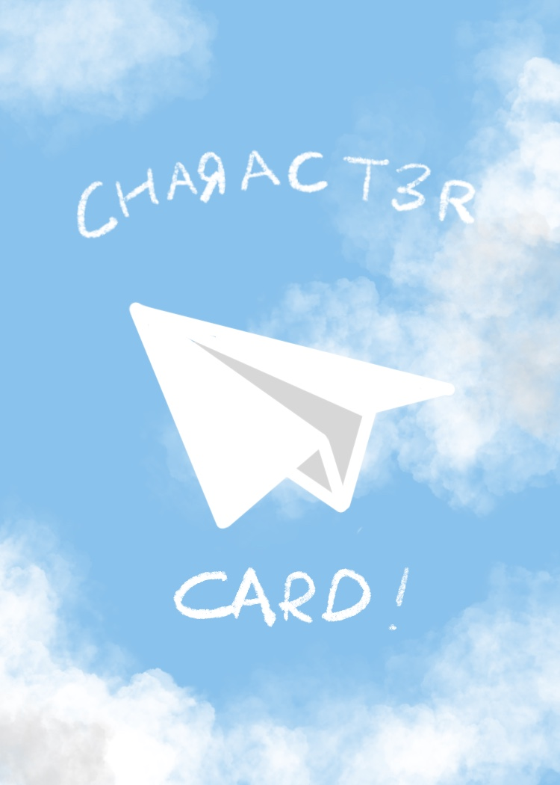
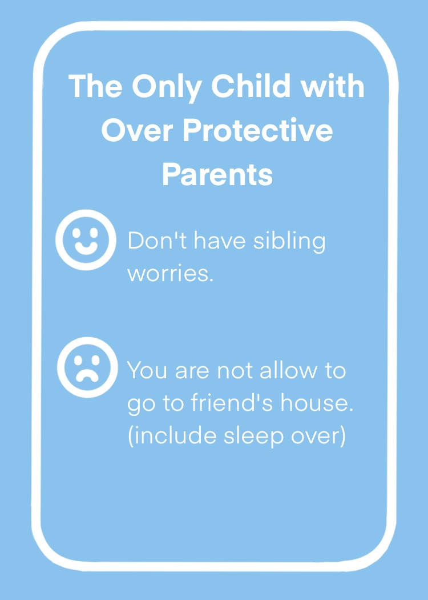
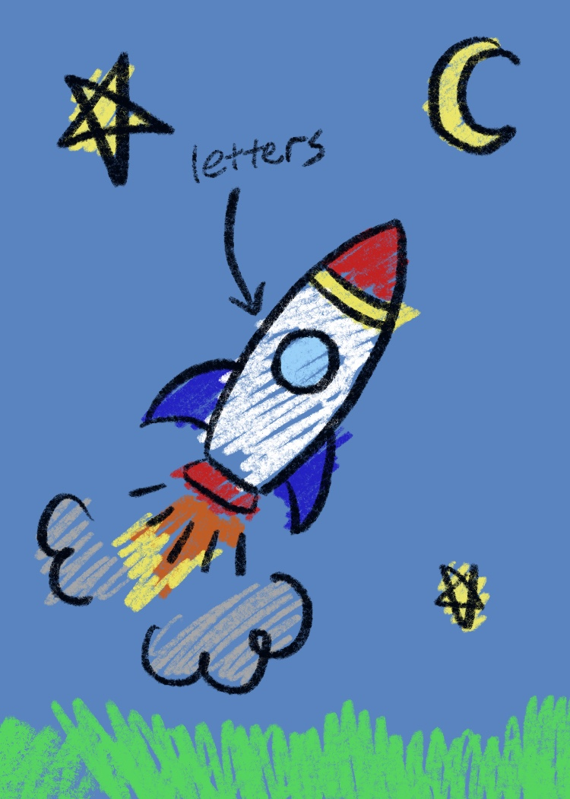
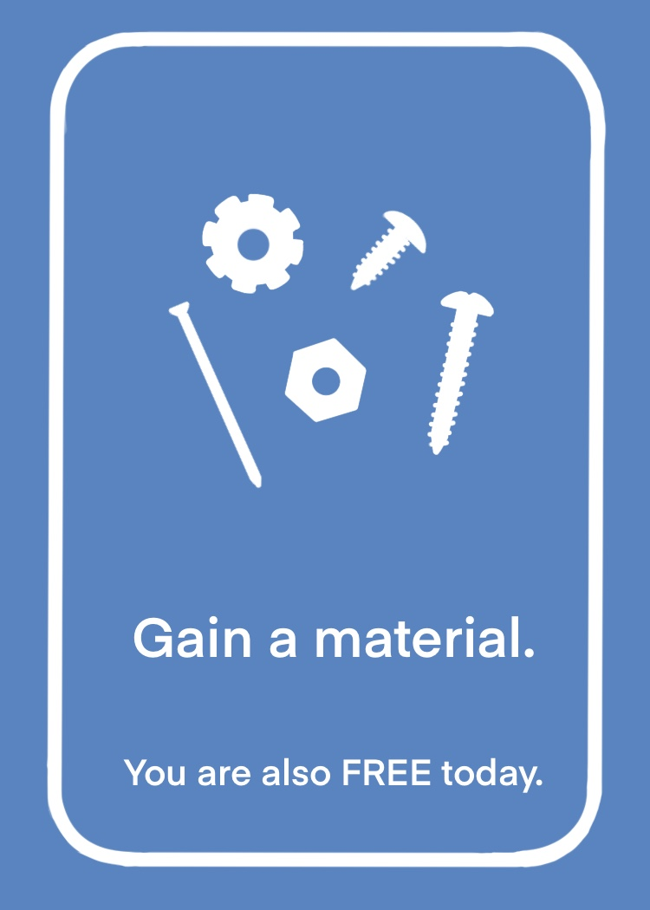
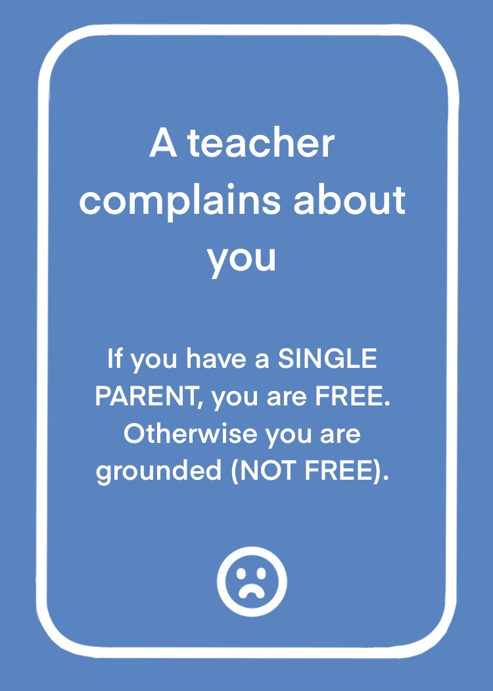
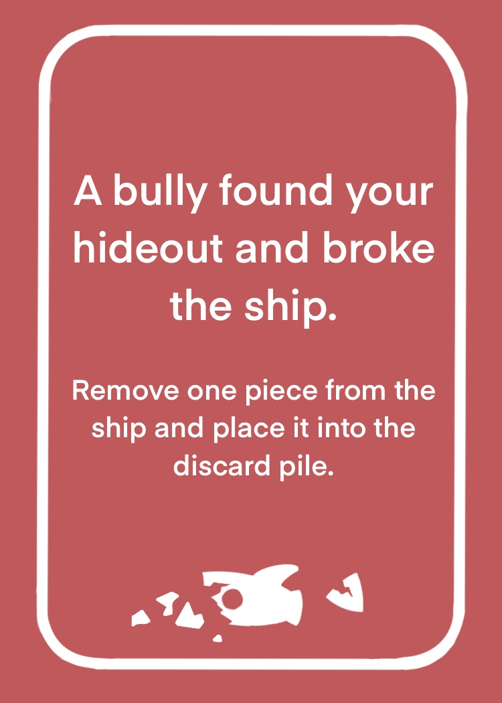
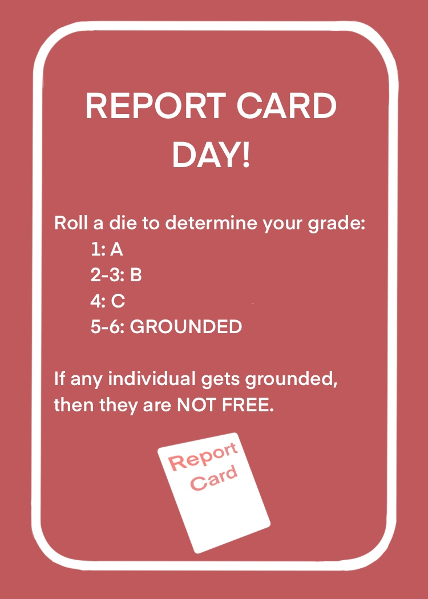
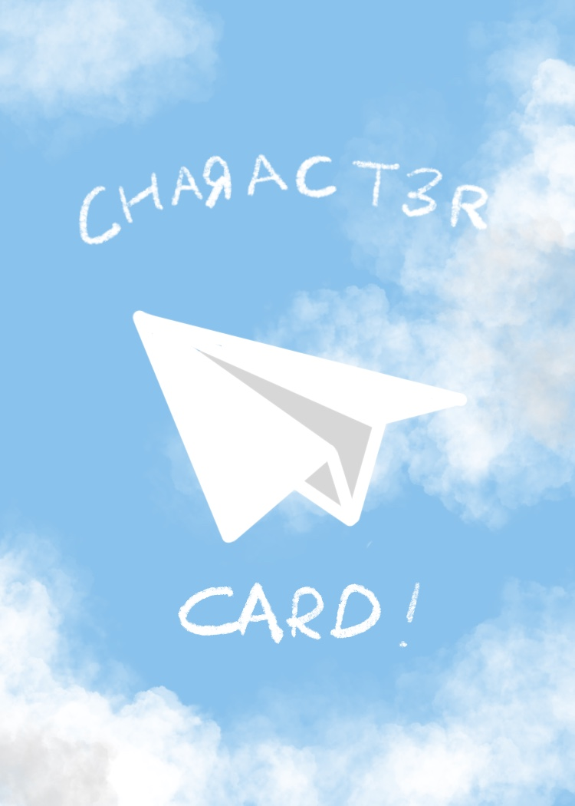
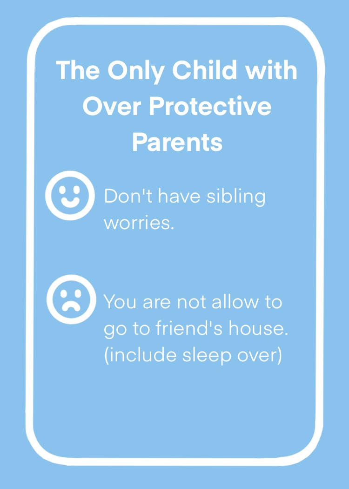
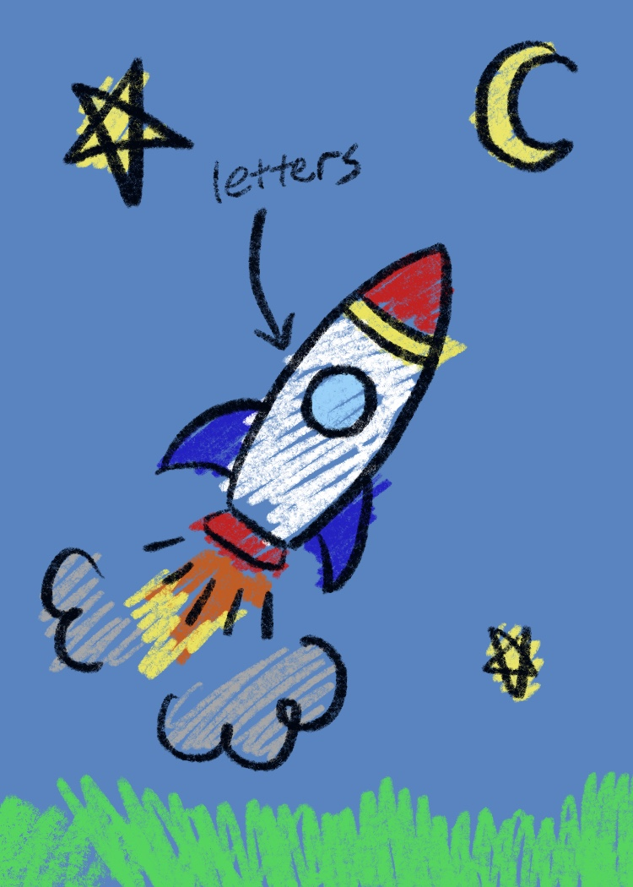
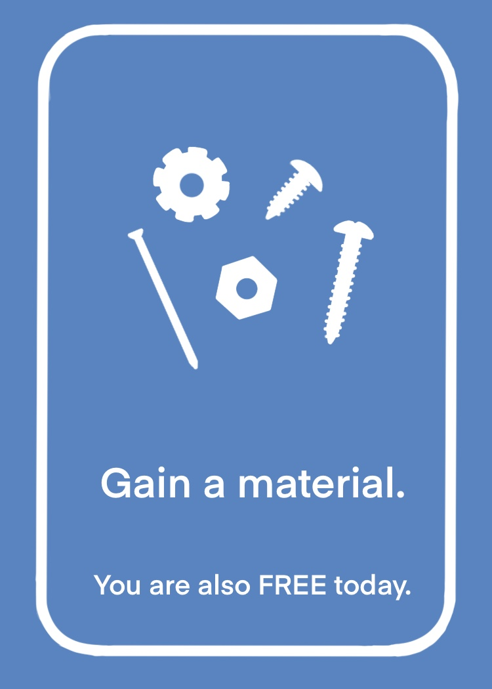
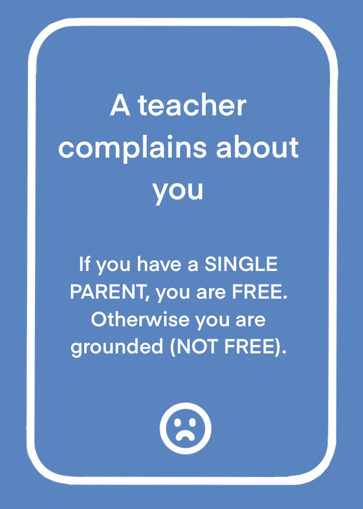
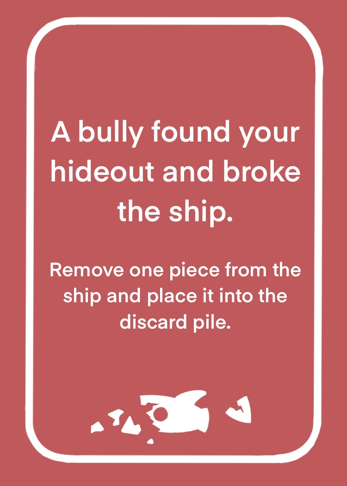
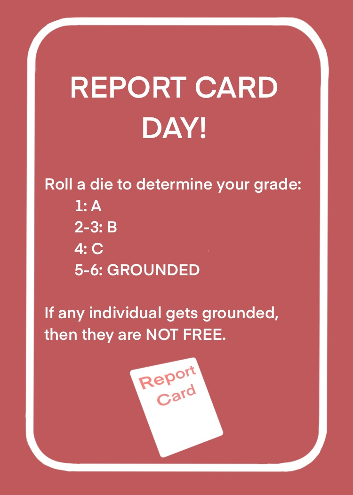